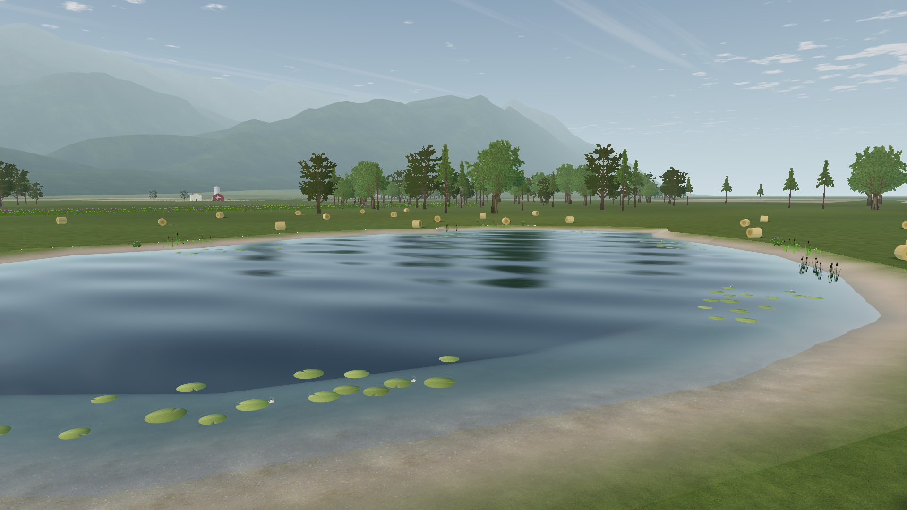
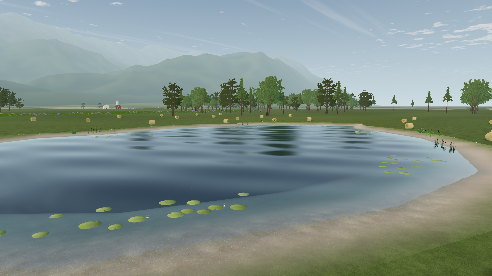

Mountain detail in High
Same camera, lighting, assets and graphics settings. The mountain material now preserves its authored texture controls and decodes its palette correctly. Vegetation is identical on both sides and belongs to the separate vegetation track.


BeforeAfter
Unmodified native 1920 × 1080 captures · Forward+ · 4× MSAA · Windows / RTX 3090. This corrects a material defect; it does not establish full renderer parity or an FPS gain. Evidence and limits.